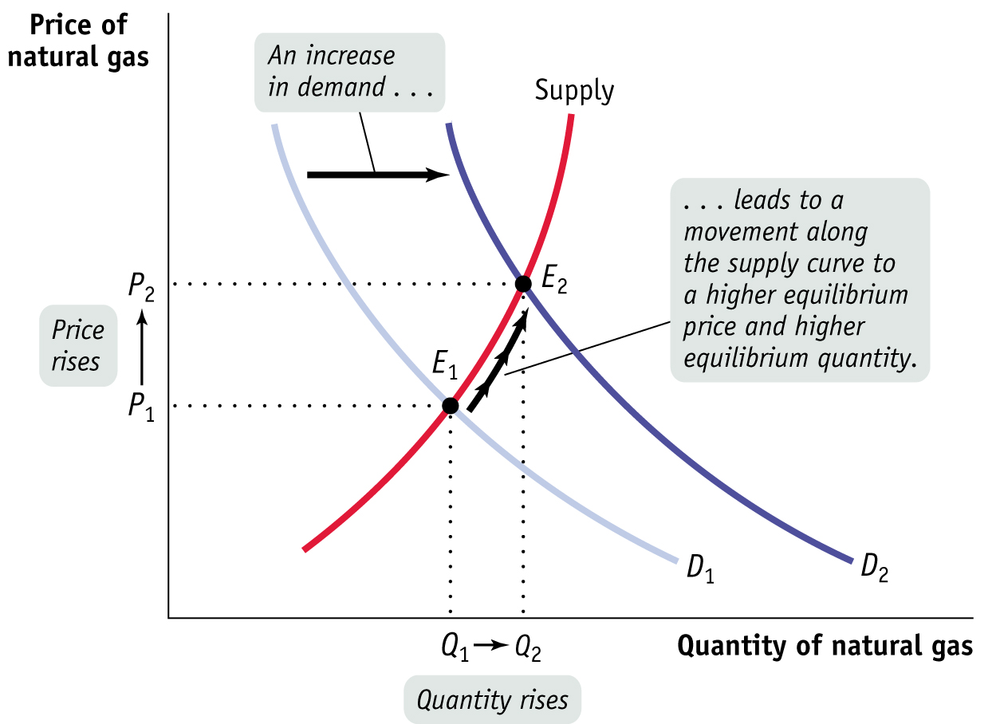

Figure 3.14: FIGURE 3-14 Equilibrium and Shifts of the Demand Curve

Figure 3.14: The original equilibrium in the market for natural gas is at E1, at the intersection of the supply curve and the original demand curve, D1. A rise in the price of heating oil, a substitute, shifts the demand curve rightward to D2. A shortage exists at the original price, P1, causing both the price and quantity supplied to rise, a movement along the supply curve. A new equilibrium is reached at E2, with a higher equilibrium price, P2, and a higher equilibrium quantity, Q2. When demand for a good or service increases, the equilibrium price and the equilibrium quantity of the good or service both rise.